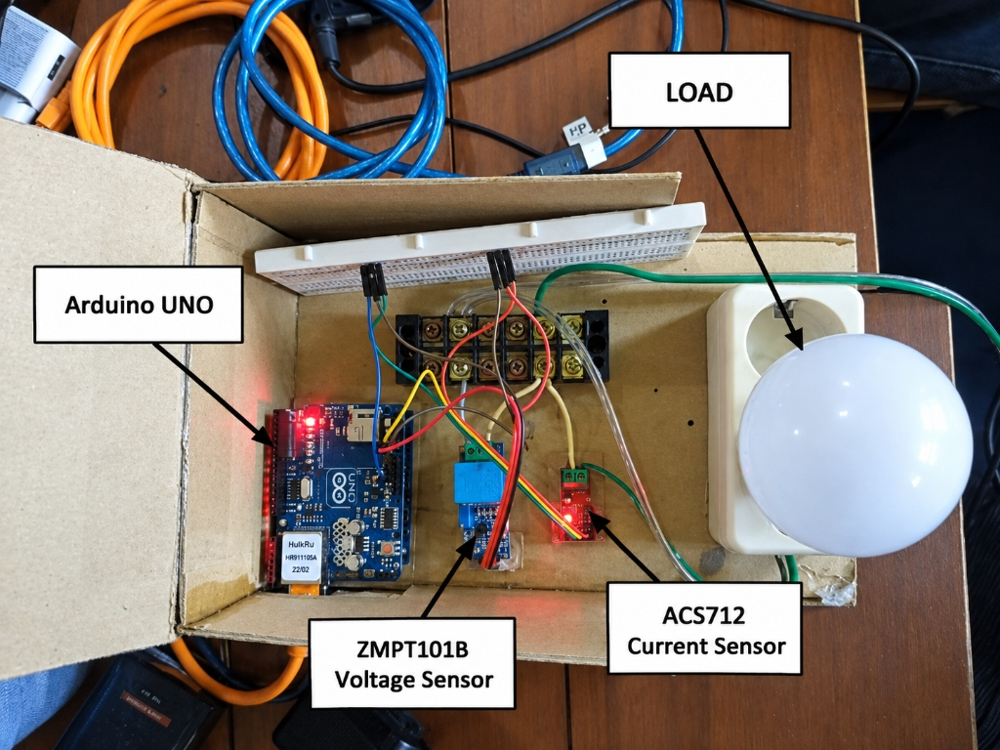
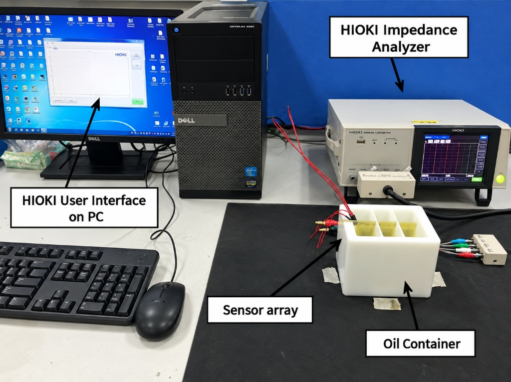

Classroom energy consumption is traditionally recorded only on monthly bulk utility meters, making it difficult to continuously monitor discrete loads, pinpoint peak demand periods, eliminate idle off-hour waste, and detect abnormal electrical draw.
The system aims to capture electrical load information and transform it into understandable real-time and historical energy data via microcontroller telemetry and a digital monitoring interface.

A low-cost sensor-based concept for preliminary screening of changes in cooking-oil condition by analysing measurable physical and electrochemical parameters.
Water/moisture contamination, pH variation, temperature characteristics, and impedance properties.